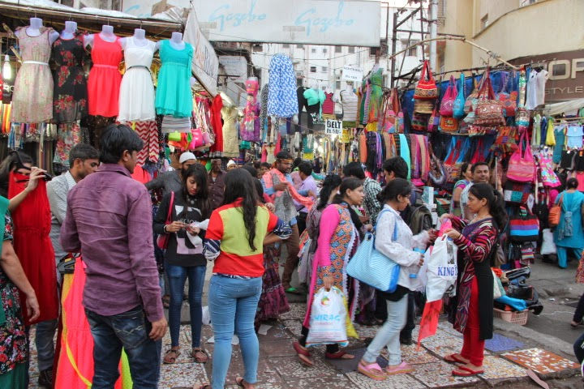
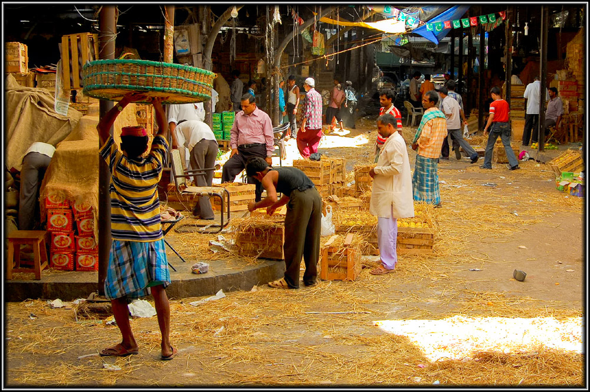
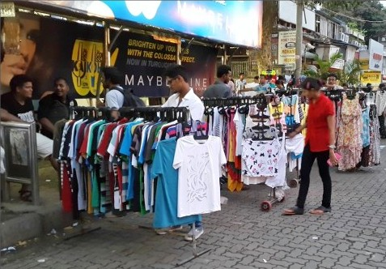
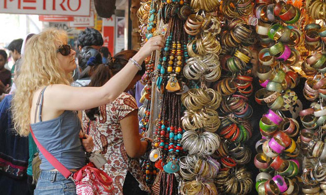
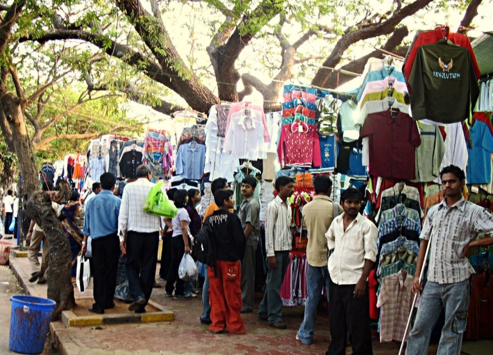
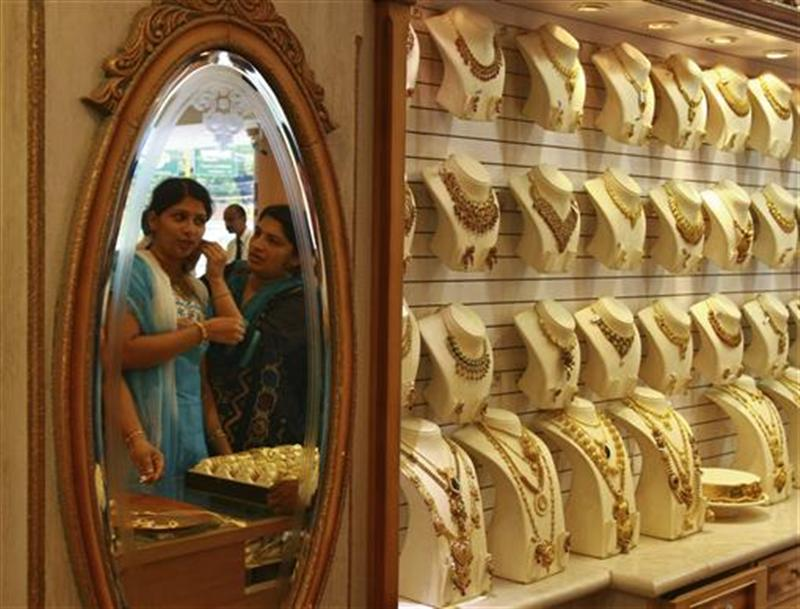
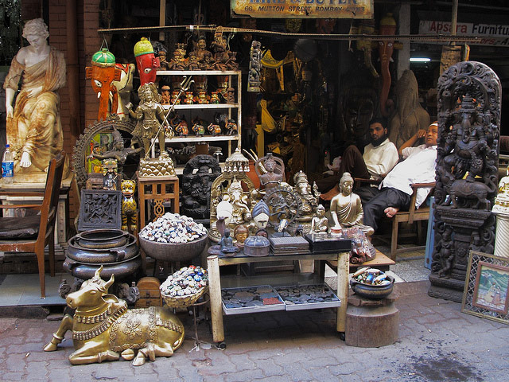
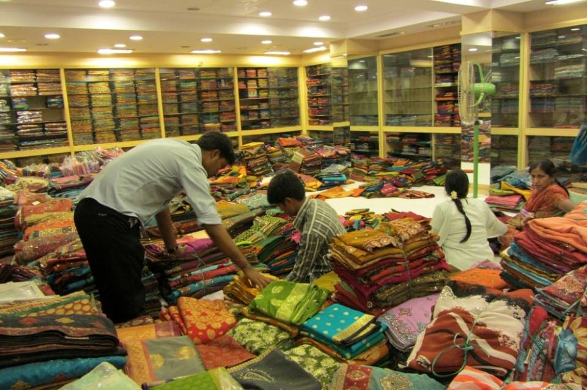
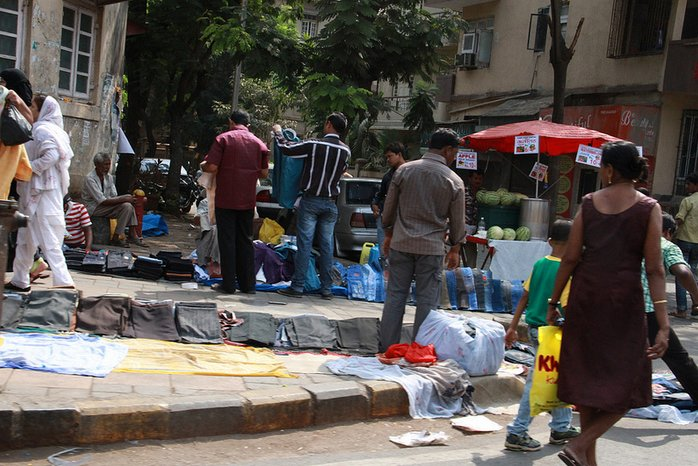
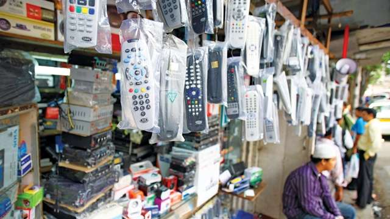

Best Places to Shop in Mumbai!!!
The ‘City of Dreams’ is an absolute shoppers delight. There are hordes of designer shops and malls but there are various markets also that make shopping all the more exciting. With superb bargaining tactics and little bit of research, shopping in Mumbai is something everyone would love! Below is a lots of the local places street shopping in Mumbai where you can find the best at the least cost.
1. Linking Road
Bandra is a shopping hub! Linking Road in Bandra lives up to its billing. From latest clothes, shoes and accessories, Linking Road has it all. Bargaining is rampant and rightly so, but you can be assured to find the trending fashion at throwaway prices at Linking Road.
2. Crawford Market
An old-style market hosted in an ancient historic building from the colonial times. Crawford market is apt if a person wants to experience the local shopping flavour. The place specializes in wholesale of products such as fruits, vegetables and spices. Another feature of Crawford market is its section that is dedicated to pets of different sizes and breeds!
3. Hill Road
The second place that is a shopper’s delight is Hill Road which is also in Bandra. The place is very lively and bustling with moving sellers to footpaths lined with shops selling the best stuff. Hill Road dons a different avatar altogether during the year end and that is the time, when it is more apt to visit the place to shop.
4. Colaba Causeway
Shopping at Colaba Causeway is like visiting a carnival. There is not one thing that a person will not find here. Handicrafts, books, clothes, shoes, jewellery; you name it and Colaba Causeway has it.
5. Fashion Street
The name says it all! An entire stretch of street dedicated to up the ante of your fashion. With approximately 150 -175 stalls present on the street selling clothes, shoes accessories at dirt cheap prices it attracts teenagers and college going students in plenty.
6. Zaveri Bazaar
One of the most popular jewellery market not only in Mumbai but in India. There are various shops in this market that sell precious stones, uncut jewellery, and gold and so on. Certain brands such as TBZ and Tanishq have established their stores here.
7. Chor Bazaar
Located in South Mumbai, the name of the place translates to ‘thieves market’. It was originally called Shor Bazaar, because the place is very noisy. It is one of the oldest markets in Mumbai and has a history that spans over 150 years. It is home to many antique goods and shopping lovers will go through the place to find the goods as per their need at very cheap rates! From antiques to electronics, the place is never short on things to offer.
8. Hindmata Market
A market that is every Indian clothing fans delight! Hindmata Market in Dadar has various shops that specialize in selling different dress materials and also readymade wear. Sarees, salwar kameez and readymade sherwanis will leave everyone in awe!
9. Wednesday Market-Mahim
Every Wednesday, Mahim turns in to a shopping haven. As the weekly novenas are held calling Christians across the city, hawkers line up in Mahim, selling clothes, shoes, accessories, books and everything you can ask for at prices so low that you will be left surprised!
10. Lamington Road
If you have any requirements in the electronic sector, look nowhere else and head to Lamington Road. The place has hordes of shops selling electronic items and lesser costs!
So, with these places, you can definitely shop till you drop! You may have to rummage through the places and shop, but the experience and what you will get in return is definitely worth the rummaging!